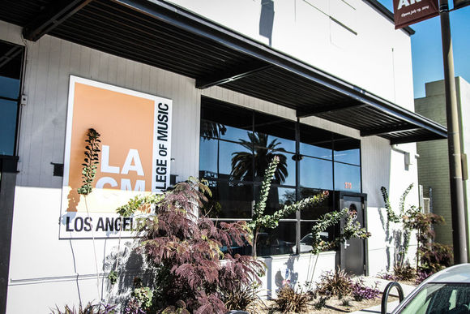

教学与美国现代音乐学院课程接轨，包括视唱练耳、乐理/和声均按照伯克利音乐学院体系教学
名师教学，器乐专业学习确保达到甚至高于申请国外音乐学院水准
多种形式的合奏课，使学生掌握更多的现代音乐风格，提高演奏经验
音乐专业英语教学，使英语能够成为学生学习音乐的工具
帮助学生制作申请资料，完成整个申请过程
BERKLEE COLLEGE OF MUSIC - 伯克利音乐学院
位于美国马萨诸塞州波士顿市。1945年成立，是美国最早成立爵士专门学校，也是当今世界现代音乐教育的顶尖学府。开设作曲、器乐演奏、音乐制作、音乐教育、电影音乐等12个专业的4年制学位课程，以及证书课程。每个专业都有业界知名的音乐家和教育家任教，毕业的学生中也出现了数不胜数的当前流行、爵士、摇滚音乐界的明星。
2017年开始，伯克利音乐学院还与哈佛大学联合推出5年制的双学位课程。伯克利音乐学院每年有春、夏、秋三个学期，每个学期均可以申请入学。
学费： $42,750美元 / 年
Musicians Institute - MI音乐学院
MI音乐学院（音乐家联盟学院）位于加利福尼亚州的洛杉矶市。创建于1977年，在音乐界享有很高的荣誉，是美国著名的音乐教育中心。这座流行音乐界的殿堂级学府，以其悠久的历史，独特的教育风格，吸引并汇集着来自世界各地的业界才子，为美国以及世界音乐做出杰出的贡献。该学院是一所享誉国内外的重点音乐学院，于1981年已被授权成为国家音乐协会成员之一。
MI音乐学院优势在于地处好莱坞，学生们置身于世界娱乐的中心地带，不论是学习流行音乐表演和音乐制作，都能站在行业趋势的最前端。
学费：学士学位 $90,720美元

Los Angeles College of Music – 洛杉矶音乐学院
洛杉矶音乐学院（LACM）当年离开MI的资深老教授Joe Procaro和Ralph Humphrey创建于1990年代。虽然较为年轻，但现在已然成为美国最好的现代音乐学院之一。它坐落于美国洛杉矶市郊区的帕萨迪纳。LACM同样提供四年制的学士学位课程，包括音乐演奏、音乐制作、音乐商业等专业。教师团队由业界一流的音乐人组成，秉持精英教学的理念。
洛杉矶音乐学院的学费和生活费用较为经济。